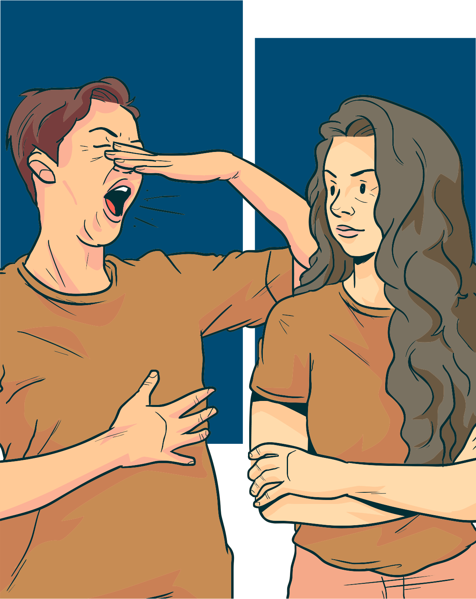

Formas de transmissão da covid-19
A transmissão da covid-19 acontece quando uma pessoa infectada espalha no ar gotículas contaminadas ao falar, tossir ou espirrar. Assim, uma pessoa sem a doença pode respirar tais gotículas infectadas que entram pela mucosa da boca, do nariz e dos olhos e se infectar.
O SARS-Cov-2 também pode se acumular sobre superfícies (como celulares, mesas e maçanetas). Ao tocar nessas superfícies e levar as mãos aos olhos, nariz e boca, caso não realize a correta higienização das mãos, uma pessoa pode ser infectada.